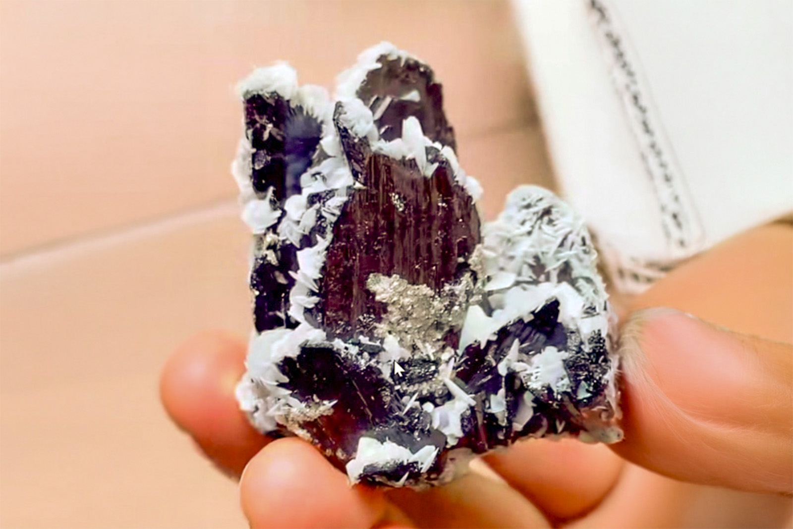

Calcite on Ferberite with Minor Muscovite, Arsenopyrite
"White Calcite Rosettes on Ferberite Crystals"
VI-09747
Yaogangxian Mine, Yaogangxian W-Sn ore field, Yizhang Co., Chenzhou, Hunan, China
Purchased 3/13/2026 from 7 Minerals Mine for $70.00
Core Collection • In Collection
Details
Storage Type: Drawer
Storage Location: C1D6 Special Black Rocks
Size class: Miniature (0)
Dimensions: 5.0 × 4.7 × 4.7 cm
Mass: 150 g
Luster: Average, Dull